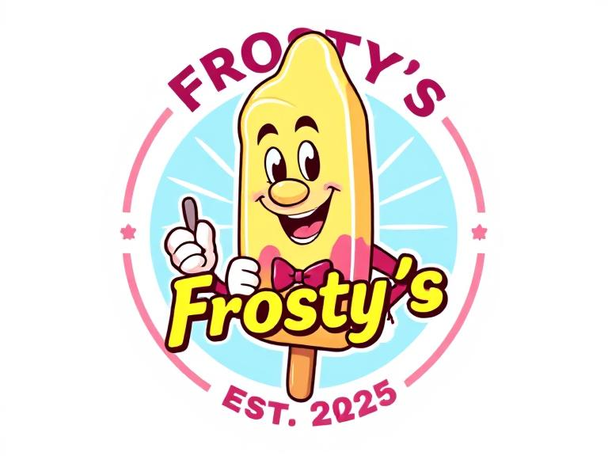

Welcome to Frosty's Ice Cream Shop!
Beat the heat with our handcrafted ice cream made fresh daily! Perfect for scorching summer days or whenever you're craving something sweet.

Beat the heat with our handcrafted ice cream made fresh daily! Perfect for scorching summer days or whenever you're craving something sweet.